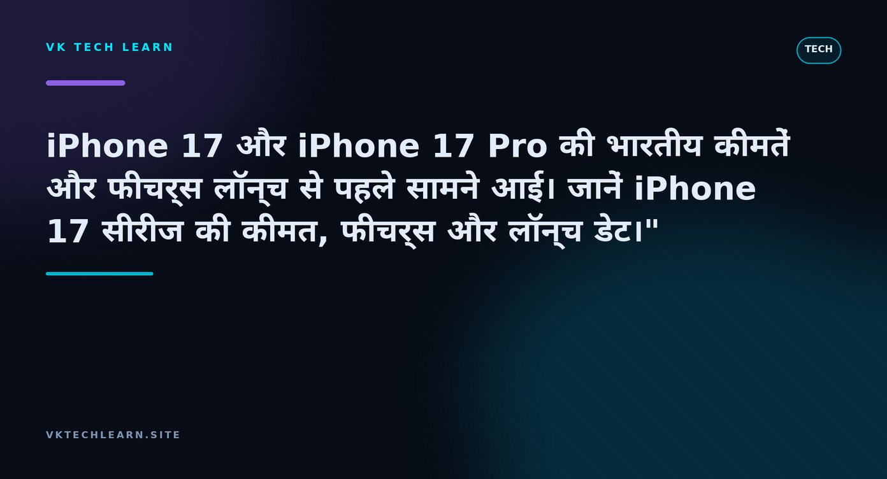

iPhone 17 और iPhone 17 Pro की भारतीय कीमतें और फीचर्स लॉन्च से पहले सामने आई। जानें iPhone 17 सीरीज की कीमत, फीचर्स और लॉन्च डेट।"
iPhone 17 Pro : लॉन्च से पहले भारतीय कीमत और फीचर्स
एप्पल का ‘Awe Dropping’ इवेंट 9 सितंबर को आयोजित होने जा रहा है, जिसमें iPhone 17 सीरीज के नए मॉडल लॉन्च होंगे। लॉन्च से पहले ही iPhone 17 और iPhone 17 Pro की संभावित कीमतें और फीचर्स लीक हो गए हैं। इस साल iPhone की कीमतें पिछले मॉडल्स से अधिक हो सकती हैं।

iPhone 17 सीरीज के संभावित मॉडल और कीमतें
- iPhone 17: बेस मॉडल की अनुमानित कीमत ₹79,990 होगी।
- iPhone 17 Air: नया मॉडल, जो 'प्लस' वेरिएंट की जगह लेगा, लगभग ₹99,990 की कीमत पर उपलब्ध होगा।
- iPhone 17 Pro: प्रीमियम मॉडल की कीमत ₹1,24,990 से शुरू होने की संभावना है।
- iPhone 17 Pro Max: सीरीज का सबसे टॉप-एंड मॉडल लगभग ₹1.64 लाख में लॉन्च हो सकता है।
iPhone 17 Pro के नए फीचर्स
- नया चिपसेट: A19 या A19 Pro चिपसेट, बेहतर परफॉर्मेंस के लिए।
- बेहतर कैमरा: 48 मेगापिक्सल टेलीफोटो लेंस और 8x ऑप्टिकल जूम।
- डिज़ाइन: नया और आकर्षक डिज़ाइन।
- iOS 26: AI-पावर्ड फीचर्स और नया इंटरफेस।
डिज़ाइन और डिस्प्ले
iPhone 17 Pro में OLED डिस्प्ले और 120Hz रिफ्रेश रेट की संभावना है। बॉडी हल्की, मजबूत और प्रीमियम लुक के साथ होगी। गेमिंग और वीडियो अनुभव और बेहतर होगा।
बैटरी और चार्जिंग फीचर्स
बैटरी क्षमता बढ़ाई जा सकती है। फास्ट चार्जिंग और MagSafe सपोर्ट मिलेगा। Pro Max मॉडल में सबसे लंबी बैटरी लाइफ होगी।
स्टोरेज और कनेक्टिविटी
128GB से 512GB तक स्टोरेज विकल्प होंगे। कनेक्टिविटी में 5G, Wi-Fi 6E और ब्लूटूथ 5.3 शामिल हो सकते हैं।
सॉफ्टवेयर और iOS 26
iPhone 17 सीरीज iOS 26 के साथ आएगी। इसमें नए विजेट्स, AI फीचर्स और बेहतर इंटरफेस शामिल होंगे। पुराने iPhones के लिए भी iOS 26 अपडेट जारी होगा।
भारत में उपलब्धता और लॉन्च डेट
लॉन्च इवेंट 9 सितंबर को होगा। iPhone 17 और iPhone 17 Pro भारत में रिटेल स्टोर्स और ऑनलाइन प्लेटफॉर्म पर उपलब्ध होंगे। प्री-बुकिंग भी तुरंत शुरू हो सकती है।
संभावित मूल्य वृद्धि के कारण
- नए चिपसेट और हार्डवेयर सुधार
- बेहतर कैमरा और डिस्प्ले फीचर्स
- उच्च गुणवत्ता वाली निर्माण सामग्री
- इन्फ्लेशन और अंतरराष्ट्रीय मार्केट रेट्स
निष्कर्ष
iPhone 17 और iPhone 17 Pro सीरीज प्रीमियम सेगमेंट में एप्पल की स्थिति को मजबूत बनाएगी। नए फीचर्स, बेहतर परफॉर्मेंस और आकर्षक डिज़ाइन इसे यूज़र्स के लिए और भी आकर्षक बनाएंगे। सभी कीमतें और फीचर्स लीक रिपोर्ट्स पर आधारित हैं। आधिकारिक घोषणा 9 सितंबर के इवेंट में होगी।
टिप: अगर इस ब्लॉग में किसी जानकारी में कोई गलती हो या सुझाव देना हो तो हमें vkkmanage@gmail.com पर फीडबैक दें या हमारी आधिकारिक वेबसाइट VK Tech Learn पर जाएं।